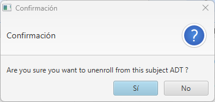
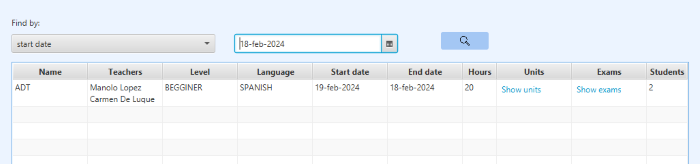

Subject Management: Help

Descripción general
Dependiendo del tipo de usuario que inicie sesión en la aplicación, podrá realizar acciones específicas. Si el usuario es de tipo profesor, tendrá acceso a controles que le permitirán crear, modificar, buscar y eliminar asignaturas. Por otro lado, si el usuario es de tipo alumno, podrá realizar búsquedas sobre las diferentes asignaturas. Además, si se encuentra en la opción de visualizar todas las asignaturas, tendrá la posibilidad de matricularse. Esta opción estará seleccionada por defecto al abrir la ventana y al pulsar "All Subjects" en el combo box de selección.
Operaciones para profesores
Crear asignaturasPara crear una asignatura, el usuario deberá hacer clic en el botón Create. Se generará una asignatura con valores predeterminados, inicializando los campos Level a 'BEGINNER', Language a 'SPANISH' y las fechas a la fecha del día de creación. Los demás campos estarán vacíos. Si no hay errores, la nueva entrada se mostrará en la tabla.
Modificar asignaturasLa modificación de asignaturas se realizará directamente sobre la tabla, la cual es editable. Para modificar los campos de texto, como "name" y "hours", simplemente haz doble clic en el campo que deseas editar y presiona "Enter" para finalizar la edición.
Para asignar profesores a la asignatura, haz doble clic en la celda correspondiente a los profesores. Se abrirá un menú desplegable con la lista de todos los profesores, donde los que ya estén asignados a esa asignatura aparecerán preseleccionados. Después de seleccionar los nuevos profesores, presiona "Enter" para guardar la selección.

Para editar los campos de nivel e idioma, haz doble clic en sus respectivas celdas y se desplegará un menú de selección con las diferentes opciones disponibles. Al seleccionar una opción diferente a la actual, se realizará el cambio.
Finalmente, para editar las celdas de fecha, selecciona la celda correspondiente y se abrirá un selector de fechas, donde podrás elegir la nueva fecha deseada.
Borrar asignaturasPara eliminar una asignatura deberá seleccionar el que quiera de la tabla y pulsar en el botón de Delete
Si no se produce ningún error, se le pedirá una confirmación para borrar la asignatura deseada.
Si se confirma el borrado se eliminará la asignatura y se actualizará la tabla que se muestra en la ventana.
Operaciones para alumnos
Matricularse y desmatricularse en una asignatura
Para poder matricularse o desmatricularse, el alumno deberá acceder a la sección que muestra todas las asignaturas disponibles. Si el alumno ya está matriculado en una asignatura, en la columna Matriculated? se mostrará un checkbox marcado. Si desea desmatricularse, deberá hacer clic en el checkbox y se le presentará el siguiente mensaje de confirmación:
Si confirma, quedará desmatriculado en la asignatura y se actualizará el número de estudiantes matriculados. Para desmatricularse, el proceso es el mismo pero en sentido inverso. Se mostrará el siguiente mensaje:
Operaciones para profesores y alumnos
Busqueda de asignaturasPara buscar información sobre una asignatura, primero debes seleccionar el criterio de búsqueda en el ComboBox. Puedes buscar por nombre de asignatura, nombres de profesores, fechas de inicio o fin de la asignatura, o por la cantidad de horas que tiene. Además, puedes ver todas las asignaturas y aquellas asociadas contigo (las que impartes si eres profesor o las que cursas si eres estudiante). Una vez que hayas decidido tu criterio de búsqueda, haz clic en el botón Buscar. Si no hay errores, la tabla se actualizará con las asignaturas encontradas. Si no se encuentra nada, se mostrará un mensaje de error.
 Imprimir listado de mental diseasePulsando el botón Print se abrirá una ventana donde puede ver un documento que contiene un listado de las asignaturas que existen en la aplicación. Mediante los botones de la parte superior de la ventana podrá imprimir o almacenar dicho informe.
Menús contextuales
Si el usuario es un profesor, tendrá la capacidad de eliminar y crear asignaturas, así como imprimir informes. Esto se logra haciendo clic derecho sobre la tabla, donde se desplegará un menú contextual con estas tres opciones disponibles.